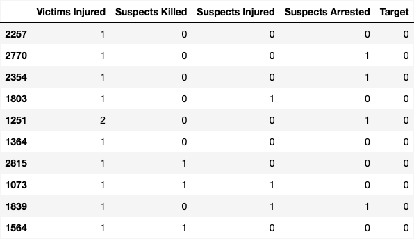
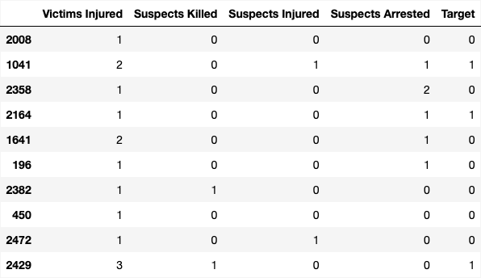
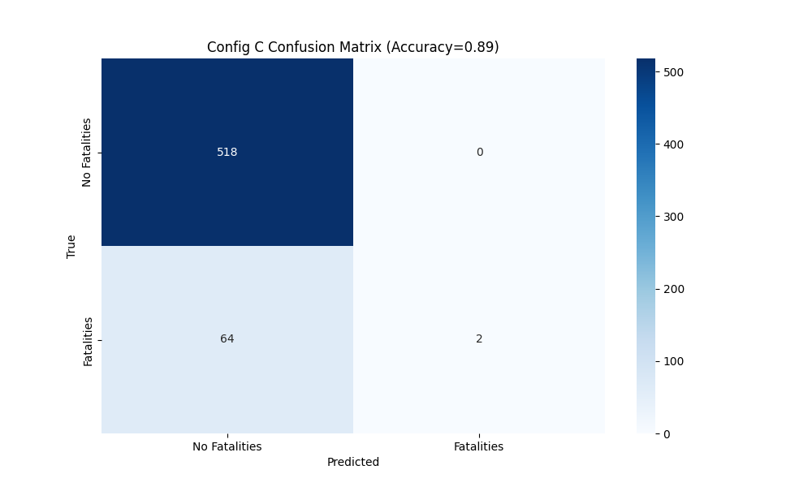
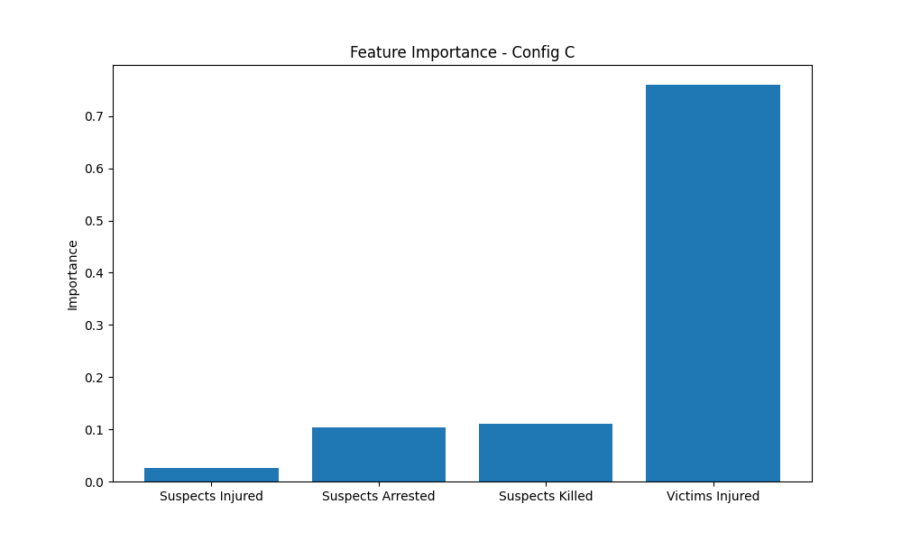
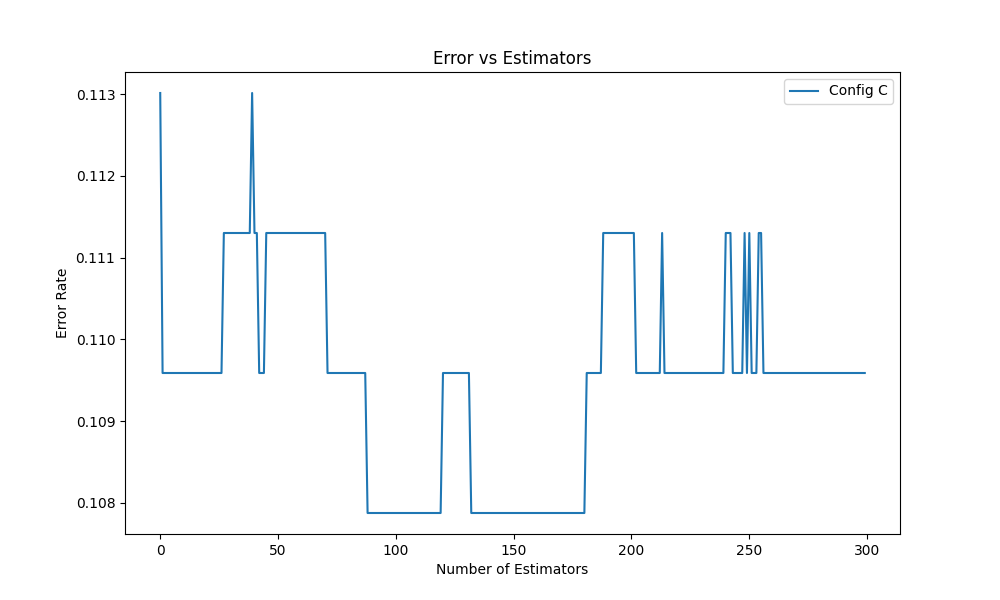
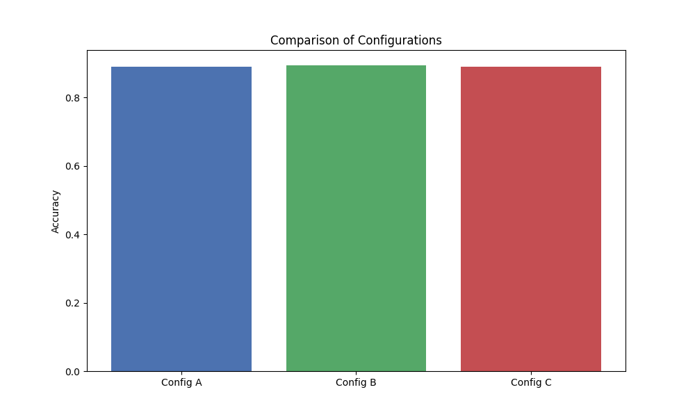

Officer Involved Shootings

Training Data
Testing Data
Confusion Matrix
Feature Importance
Error vs Estimators
Comparison of Configurations
Conclusions
Boosting methods performed well in predicting fatal outcomes in officer-involved shootings, with all configurations achieving high accuracy.
Config B (learning_rate=0.05, n_estimators=200, max_depth=4) delivered the best result at 0.894 accuracy, slightly outperforming Configs A and C.
Hyperparameter tuning had a modest but measurable impact. Deeper trees and more estimators helped capture complex relationships, while a lower learning rate improved generalization. The error vs. estimators plot showed fluctuations, suggesting that model stability varies with estimator count and may benefit from early stopping or cross-validation.
Feature importance analysis again highlighted “Victims Injured” as the most influential variable, with other features contributing less significantly. This reinforces the pattern seen across datasets: injury severity is a strong predictor of fatality. Boosting not only improved predictive accuracy but also helped surface key variables relevant to understanding officer-involved incidents, supporting the broader project goal of uncovering patterns in gun violence data.